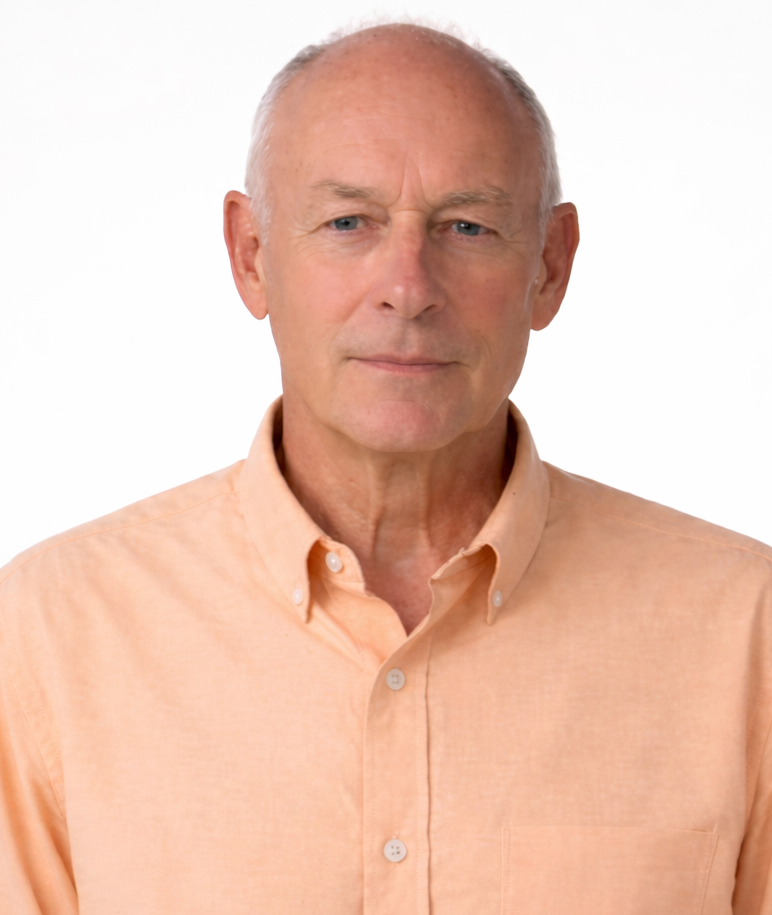
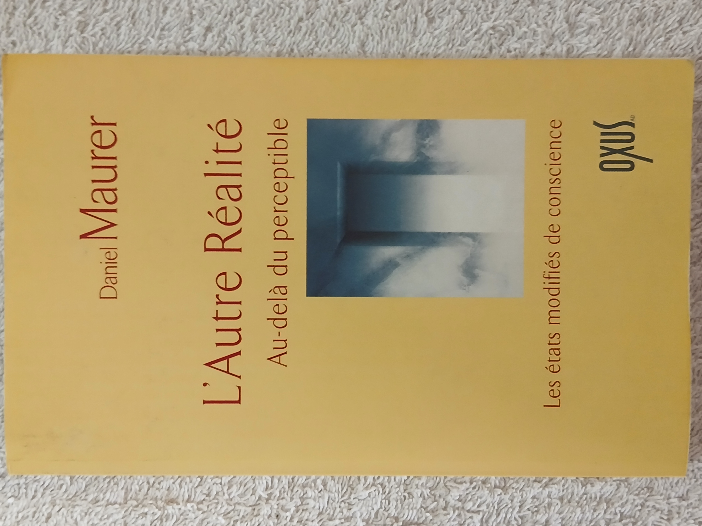

LE SITE DE L'ECRIT VAIN
Daniel Maurer

Essayiste et romancier, spécialiste des Expériences de Mort Imminente (EMI) et des États Modifiés de Conscience (EMC).
Un écrit est vain lorsqu'il n'atteint pas le lectorat pour lequel il a été conçu.
Parmi mes citations préférées voici le trio de tête:
Deux choses sont infini es : l'Univers et la bêtise humaine. Quoique pour l'Univers, je n'ai pas de certitude absolue. (Albert Einstein)
La grande leçon de la vie, c'est que parfois, ce sont les fous qui ont raison. (Winston Churchill)
Si ceux qui disent du mal de moi savaient exactement ce que je pense d'eux, ils en diraient bien davantage. (Sacha Guitry)
NUL n'est prophète en son pays... Parce que NUL ne sait se faire entendre. NUL va donc tenter d'intéresser quelques lecteurs par le biais de cette publication.
Présentation
Je suis né en Alsace, au milieu du siècle dernier, dans une clinique juive (la Clinique Adassa, à Strasbourg) d'une mère catholique et d'un père protestant ; venu au monde sous le signe de l'œcuménisme, en quelque sorte.
Après des études secondaires (chaotiques) en internat religieux (catholique), un concours et un diplôme plus tard, je devenais infirmier dans un hôpital psychiatrique du sud de la France.
En 1984, un proche m'a raconté une histoire troublante : alors qu’il se reposait sur son lit, il s'est retrouvé soudain collé au plafond de sa chambre, d'où il observait son corps allongé. Puis il a été aspiré dans un tunnel vers une lumière d’une intensité inouïe, etc.
-— Un truc de fou, me dit-il.
Il m'a demandé si le phénomène qu'il venait de vivre relevait d’une pathologie psychiatrique. Je ne savais quoi répondre. Intrigué, je me suis mis à chercher, à me documenter, à questionner des spécialistes. Un beau matin, le hasard me mettait entre les mains le livre de Raymond Moody " La vie après la vie ". Le lien s’est imposé immédiatement : il avait vécu une Near Death Experience (NDE).
À l’époque, en France, aucun ouvrage n'avait encore abordé le thème. Et ce n'est que dix-sept années plus tard qu'était publié " La vie à corps perdu " (2001), premier ouvrage français proposant une réflexion personnelle et structurée sur ce phénomène, auquel j'ai restitué sa dénomination française : Expérience de Mort Imminente (EMI), terme forgé à la fin du XIXᵉ siècle par le philosophe Victor Egger.
Trois essais suivront en 2002 (L'autre réalité - L'au-delà), 2005 (Les Expériences de Mort Imminente) et 2007 (L'autre réalité).
Après une longue pause, je m'essaie à l’écriture de romans avec " Au nom de la vérité " et " Un souffle d’éternité ", publiés en février et mars 2026.
À l'exception de la dernière réédition en 2026 de " L'autre réalité ", uniquement disponible sur la plateforme Amazon, mes livres sont commercialisés dans toutes les librairies en ligne et sur commande chez votre libraire habituel.
Romans récents
Et si l’immortalité devenait réalité ?
Émeline et Sébastien Masson, brillants chercheurs en génomique, font une découverte qui pourrait éradiquer le cancer et prolonger la vie humaine indéfiniment. Une avancée sans précédent… et un pouvoir capable de bouleverser le monde.
Mais cette révélation vertigineuse attire les convoitises les plus dangereuses. Pour protéger leur secret et poursuivre leurs recherches, les deux scientifiques sont transfé-rés dans une ancienne base militaire ultra-sécurisée.
Entre manipulations, intrigues internationales et forces obscures prêtes à tout pour s’emparer de leur découverte, le couple se retrouve au cœur d’un suspense haletant : l’immortalité restera-t-elle un privilège réservé ou pourra-t-elle devenir accessible à tous ?
Plongez dans un thriller scientifique captivant où génétique, pouvoir et ambition se mêlent dans une course contre le temps.
Diffusé par Librinova en février 2026, 225 pages
_____________________________________________
À Paris, Justine et Antoine, un couple de détectives privés, acceptent une mission confidentielle commanditée au plus haut niveau de l’État. Trois anciens rouleaux de parchemin, dispersés depuis des siècles, doivent être retrouvés et réunis. Leur contenu est jugé suffisamment sensible pour menacer l’équilibre politique et social du pays.
De Paris à l’Alsace, de la Provence à la côte méditerranéenne espagnole, l’enquête s’apparente à un jeu de piste semé d’embûches. Filatures, pièges, manipulations : Justine et Antoine comprennent qu’ils ne sont pas seuls sur cette piste. Des forces occultes, héritières d’un secret enfoui depuis le Moyen Âge, sont prêtes à tout pour empêcher la divulgation de ces documents.
L’origine de l’affaire remonte à la fin du XIIᵉ siècle. De retour de croisade, les Templiers rapportent de Terre Sainte deux papyrus dont la traduction sur parchemin, un siècle plus tard, provoque la chute de l’Ordre du Temple. Avant son arrestation, Jacques de Molay, dernier grand maître des Templiers, fait dissimuler une copie du texte, divisée en trois rouleaux.
À mesure que les fragments sont retrouvés, Justine et Antoine prennent conscience de l’ampleur du secret qu’ils s’apprêtent à exhumer. Car certaines révélations, même sept siècles plus tard, peuvent encore tuer… ou plonger le monde dans le chaos.
Un thriller historico-politique au cœur des mécanismes de la manipulation, du mensonge et de la fabrication du vrai.
Diffusé par Librinova en mars 2026, 524 pages
Essais

La vie à corps perdu
LA VIE À CORPS PERDU est un essai consacré aux Expériences de Mort Imminente, EMI (ou NDE, de l'anglais Near Death Experience).
Les personnes qui ont vécu ce phé-nomène, à l'approche d'un danger mortel ou dans des contextes moins dramatiques, nous parlent de sortie hors du corps, de passage dans un tunnel, de rencontre avec des proches défunts, d'une lumière d'amour infini, etc.
Pour qui accepte de les entendre, ces témoignages ne manquent pas de ressusciter ce vieux rêve d'immortalité que nos sociétés répriment sous une épaisse chape de rationalisme.
Devant la somme d'indices que les EMI mettent à notre disposition, la perspective d'une forme de survie de la conscience s'avère pourtant une hypothèse aussi légitime que la croyance dans une néantisation absolue.
S'il n'est pas encore objet de science, à proprement parler, le thème des EMI n'en est pas moins objet de connaissance. A ce titre il mérite davantage qu'un mépris scientiste, peu favorable au progrès de la Pensée, ou qu'un ésotérisme ténébreux limitée à un catalogue de considérations fumeuses et invérifiables.
Ce sujet délicat, plus controversé que jamais, est traité ici avec la meilleure objectivité. Pour autant, l'auteur ne se réfugie pas derrière une prudente neutralité, bien au contraire.
Paru aux Editions des 3 Monts en mai 2001, 286 pages. Livre probablement épuisé suite à liquidation judiciaire.
_____________________________________________

L'autre réalité L'au-delà
L’au-delà fait toujours l’objet de nombreux livres avec un succès constant.
Désormais, en contrepoint des croyances religieuses, se développe une approche de plus en plus scientifique qui ne laisse personne indifférent, pas même les plus sceptiques.
Si le domaine de la réalité accessible à nos sens est universellement admis, Daniel Maurer nous montre que cette réalité ordinaire n’est que la partie manifeste d’une réalité infiniment plus vaste.
Une autre réalité que nous expérimentons journellement, à de nombreuses reprises, le plus souvent de façon involontaire. Car nous possédons la remarquable aptitude de nous abstraire de l’état de conscience ordinaire pour vivre en état modifié de conscience, sur le versant de la réalité extra-ordinaire.
L’hypnose, la méditation, la transe, les rêves, les vécus à l'approche de la mort, les drogues hallucinogènes permettent de mieux appréhender le phénomène. Leur étude, complétée par d’abondants témoignages, a conduit l’auteur à envisager l’autonomie de la conscience comme une hypothèse particulièrement solide.
Cette autonomie deviendrait définitive au moment de la mort, comme le suggère sa minutieuse investigation sur le thème des expériences de mort imminente.
L’objectif de ce livre est d’apporter de nouveaux éléments de réflexion au vaste débat sur l’après-vie. Si des indices font apparaître que la conscience s’avère capable de se séparer du corps durant la vie, il sera permis d’en déduire qu’elle pourrait en faire tout autant au moment de la mort.
Edité par Philippe Lebaud en septembre 2002, 268 pages. N'est plus commercialisé, remplacé par une version éditée en 2007, rééditée en 2026 (Cf. plus bas)

Les expériences de mort imminente
Des médecins cardiologues, neurologues, réanimateurs ont découvert récemment que la conscience de patients que l’on avait cru morts était restée opérationnelle.
Mais elle était restée opérationnelle hors de leur corps ! Elle lui avait survécu en dépit du constat de l’arrêt du cœur, de la respiration et de toute activité du cerveau.
En effet, une fois réanimés, ces rescapés ont décrit dans le détail ce qu’ils avaient observé de l’intervention médicale intervenue au cours de leur mort présumée. Des récits corroborés par les témoins, médecins, infirmiers, aides-soignants, présents sur les lieux.
Ces prodiges ne manquent pas d’interroger : Quel est le statut exact de la conscience ? Se trouve-t-elle vraiment dans le corps ? Comment peut-elle rester active une fois le cerveau « éteint » ? Lui survit-elle ?
Questions d’autant plus actuelles que des comptes rendus médicaux, faisant suite à des enquêtes de grande ampleur, incitent à penser que la conscience survit à l’arrêt du cœur et du cerveau. Les auteurs allant jusqu’à suggérer qu’elle n’est pas enfermée dans le corps ! Et c’est à un constat du même ordre qu’aboutissent les travaux de certains neurologues spécialistes des états méditatifs.
Soutenir l’hypothèse de la survie n’est certainement pas faire le lit d’une régression de la pensée, comme le prétendent les « gens de raison ». En persévérant à nier sa pertinence, ceux-là courent le risque de rater une marche de l’ascension vers la vérité.
Ces dernières années, des études scientifiques irréprochables ont fourni de nouveaux indices. Des indices décisifs mais hélas ignorés du grand public, voire des scientifiques directement concernés. Une lacune que ce livre se propose de combler.
Publié par les Editions du Rocher en mai 2005, 340 pages. Toujours commercialisé.
_____________________________________________

L'autre réalité
Ce livre, paru en 2007, est une réédition augmentée de " L'autre réalité - L'au-delà " édité en 2002 (Cf. plus haut).
Depuis plus d’un siècle, la science explore une réalité qui ne cesse de lui résister. Du monde quantique aux structures du cosmos, ses découvertes mettent en lumière des paradoxes qui interrogent nos certitudes les plus fondamentales.
Les travaux consacrés aux états modifiés de conscience prolongent ce questionnement : la réalité que nous percevons par nos sens n’est peut-être que la partie émergée d’un ensemble infiniment plus vaste.
Hypnose, méditation, transe, rêve ou expériences induites par des substances hallucinogènes révèlent, lorsqu’elles sont étudiées avec méthode, une singulière autonomie de la conscience à l’égard du corps.
Une autonomie qui semble s’exprimer avec une intensité particulière à l’approche de la mort. Ces observations, longtemps marginales, s’appuient aujourd’hui sur un corpus de données suffisamment consistant pour que des chercheurs envisagent sérieusement l’hypothèse d’une forme de survie de la conscience.
Les droits ont été acquis auprès de Philippe Lebaud en 2007, 427 pages.

L'autre réalité - 2026
En février 2026, à ma demande les Editions Oxus m'ont restitué grâcieusement mes droits.
Après une relecture attentive j'ai pu faire rééditer l'intégralité du texte par Amazon, au format numérique dans un premier temps.
Dès que j'aurai reçu mon ISBN, la version papier suivra.
_____________________________________________
Roman corrigé et remanié

In nomine veritatis
Ce livre de 514 pages a fait l'objet d'une publication en 2023.
Je me suis rendu compt qu'il était émaillé de fautes, lourdeurs et autres défauts.
J'ai donc choisi de mettre un terme au contrat qui me liait à l'éditeur afin de récupérer mes droits. De ce fait la publication a été arrêtée.
Par la suite j'ai repris l'ensemble du texte, l'ai corrigé et réorganisé les chapitre afin de rendre la lecture plus fluide et plus attractive.
Puis le titre a laissé place au sous-titre : Au nom de la vérité (voir en haut de page) publié en mars 2026 par Librinova.